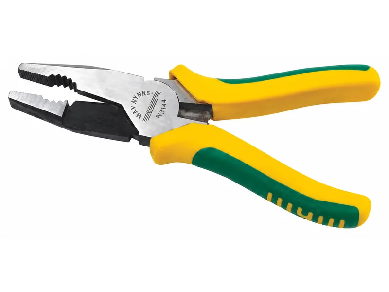
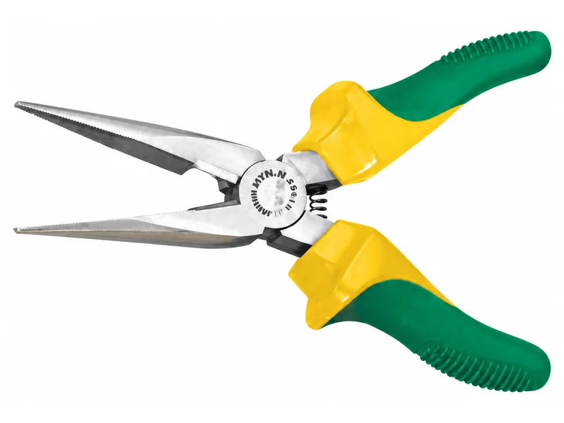
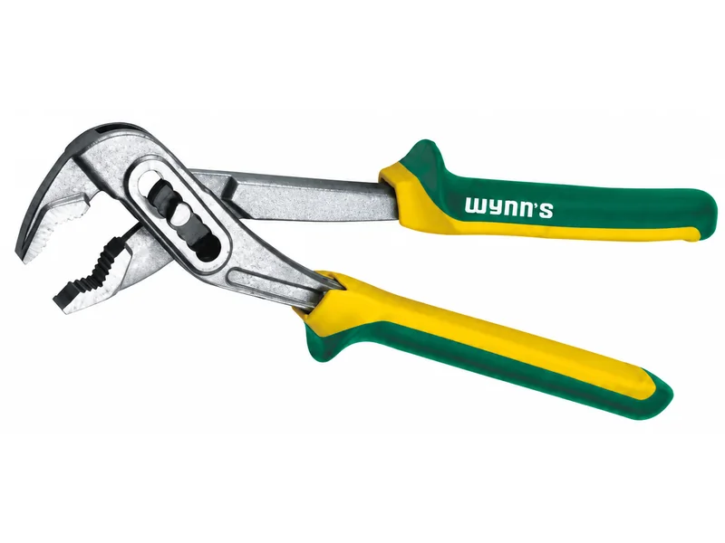
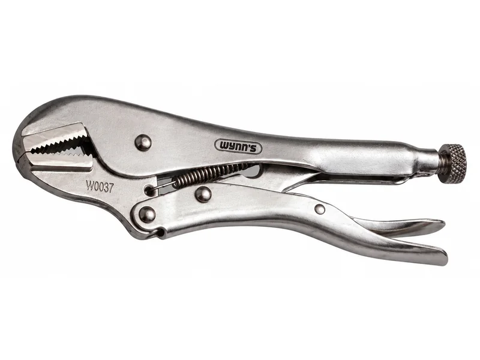

คีมแต่ละแบบใช้ทำอะไร เลือกคีมให้ถูกงาน
คีมหน้าตาคล้ายกัน แต่ปากแต่ละแบบออกแบบมาให้ทำงานต่างกัน ใช้คีมตัดไปบิดลวดหรือใช้คีมปากแหลมไปงัดของหนัก คีมจะเสียเร็วและงานก็ไม่เรียบร้อย บทความนี้สรุปคีมแต่ละแบบที่มีในแคตตาล็อก WYNNTOOLS ว่าใช้ทำอะไร และดูอะไรก่อนซื้อ
ปากคีมแต่ละแบบใช้ทำอะไร
คีมปากรวม: คีมอเนกประสงค์ที่ควรมีติดบ้าน
ปากด้านหน้ามีฟันสำหรับจับ บิด และดึง ส่วนด้านในมีปากตัดลวด บางร้านเรียกว่าคีมปากจิ้งจก บางรุ่นในแคตตาล็อกมีร่องปอกและย้ำสายไฟเพิ่ม เช่น W3455 ที่ปากตัดแข็งระดับ HRC58-63 และตัดลวดสลิงได้ 3 มม.
คีมปากแหลม: งานชิ้นเล็กในที่แคบ
ปากยาวเรียว เข้าไปจับชิ้นเล็กในที่แคบ ดัดปลายลวดเป็นห่วง และใช้กับงานไฟฟ้า หลายรุ่นมีปากตัดอยู่ใกล้ข้อต่อด้วย
คีมตัดปากเฉียง: ตัดอย่างเดียว ตัดได้ชิดผิว
ใช้ตัดสายไฟ ลวดเส้นเล็ก และเศษพลาสติกให้ชิดผิวชิ้นงาน ไม่ได้ออกแบบมาให้จับหรือบิด ควรตัดวัสดุให้อยู่ในสเปกของคีม เช่น WNS105D ระบุว่าตัดลวดได้ 0.8–1 มม.
คีมคอม้าและคีมปากขยาย: จับของใหญ่และทรงกลม
ปรับระยะอ้าปากได้หลายระดับ จับท่อ น็อตตัวใหญ่ หรือของทรงกลมที่คีมทั่วไปอ้าไม่ถึง คีมคอม้ามักใช้กับงานประปา
คีมล็อก: จับค้างไว้โดยไม่ต้องบีบ
บีบแล้วล็อกค้าง ปล่อยมือได้ ใช้จับชิ้นงานค้างไว้ คลายน็อตที่หัวรูด หรือจับชิ้นงานตอนเชื่อม ในแคตตาล็อกมีทั้งปากตรง ปากโค้ง ตัวซี ปากแบนสำหรับแผ่นโลหะ รุ่นงานเชื่อม และรุ่นล็อกโซ่
คีมหนีบและคีมถ่างแหวน: ถอดใส่แหวนล็อก
ปลายคีมเสียบรูของแหวนล็อก แบบหนีบใช้กับแหวนที่อยู่ในรู แบบถ่างใช้กับแหวนที่อยู่บนเพลา ในแคตตาล็อกมีชุด 4in1 ที่เปลี่ยนปากได้ 4 แบบ ทั้ง 45°, 90° และ 180°




เลือกตามงาน
| งาน | คีมที่เหมาะ | เหตุผล |
|---|---|---|
| ซ่อมของในบ้านทั่วไป | คีมปากรวม 1 อัน | จับ บิด ดึง และตัดลวดได้ในอันเดียว |
| เดินสายไฟ ต่อปลั๊ก | คีมตัดปากเฉียง และคีมปอกสายไฟ | ตัดสายได้เรียบ และปอกฉนวนได้โดยไม่บาดทองแดงข้างใน |
| ดัดลวด งานในที่แคบ | คีมปากแหลม | ปากเรียวเข้าถึงจุดแคบ ดัดปลายลวดเป็นห่วงได้ |
| ท่อประปา น็อตตัวใหญ่ | คีมคอม้าหรือคีมปากขยาย | อ้าปากได้กว้างและปรับระยะได้ |
| จับชิ้นงานค้าง งานเชื่อม | คีมล็อก | ล็อกค้างได้ ปล่อยมือไปทำอย่างอื่นได้ |
| ซ่อมรถ ถอดแหวนล็อก | คีมหนีบหรือคีมถ่างแหวน | ปลายคีมเสียบรูแหวนได้พอดี ถอดใส่ได้โดยแหวนไม่ดีดหาย |
| งานก่อสร้าง ผูกลวด ถอนตะปู | คีมปากนกแก้วผูกลวด และคีมถอนตะปู | แคตตาล็อกระบุว่าคีมผูกลวดเหมาะกับงานก่อสร้างและงานตกแต่ง |
| งานชิ้นเล็กละเอียด | คีมมินิ 5 นิ้ว | ขนาด 125 มม. ควบคุมง่าย มีหลายทรงปาก เช่น ปากเข็ม ปากแบน และปากนกแก้ว |
ดูอะไรก่อนซื้อ
ความแข็งของปากตัด
บางรุ่นระบุความแข็งเป็นค่า HRC เช่น HRC58-63 ยิ่งค่าสูง ปากตัดยิ่งแข็งและทนการสึก ดูค่านี้ได้ในหมายเหตุของแต่ละรุ่นในหน้าแคตตาล็อก
ด้ามหุ้มไม่ใช่ฉนวนกันไฟฟ้า
ด้ามหุ้มทั่วไปมีไว้ให้จับถนัดมือ ถ้าไม่ได้ระบุว่าเป็นคีมฉนวนสำหรับงานไฟฟ้า อย่าใช้กับสายที่มีไฟ และตัดไฟก่อนทำงานทุกครั้ง
ขนาดให้ตรงงาน
คีมเรียกขนาดตามความยาว เช่น 125 มม. (5 นิ้ว) เหมาะงานละเอียด ส่วน 150–200 มม. เหมาะงานทั่วไป ถ้าต้องตัดหรือจับของแข็งมาก รุ่นยาวกว่าจะออกแรงน้อยกว่า
คำถามที่ถามกันบ่อย
คีมปากจิ้งจกกับคีมปากรวมต่างกันไหม
เป็นคีมแบบเดียวกัน แต่ละร้านเรียกต่างกัน ในแคตตาล็อกของเราก็ใช้ทั้งสองชื่อ คือคีมที่มีปากจับมีฟันอยู่ด้านหน้าและปากตัดอยู่ด้านใน
คีมด้ามหุ้มยางกันไฟดูดได้ไหม
ไม่ควรถือว่ากันไฟ ถ้าคีมไม่ได้ระบุว่าเป็นคีมฉนวนสำหรับงานไฟฟ้า ให้ตัดไฟก่อนทำงานทุกครั้ง
HRC คืออะไร
คือค่าความแข็งของเหล็กแบบ Rockwell C ยิ่งค่าสูง เหล็กยิ่งแข็ง ปากตัดยิ่งทนการสึก
คีมหนีบแหวนกับคีมถ่างแหวนต่างกันยังไง
คีมหนีบแหวนบีบปลายเข้าหากัน ใช้กับแหวนล็อกที่อยู่ในรู ส่วนคีมถ่างแหวนกางปลายออก ใช้กับแหวนล็อกที่อยู่บนเพลา ถ้าไม่แน่ใจ เลือกชุดที่เปลี่ยนปากได้
คีม WYNNTOOLS ราคาเท่าไหร่
ราคาไม่ได้ประกาศในเว็บ ส่งรหัสสินค้าหรือรูปมาทาง LINE ทางร้านแจ้งราคาปลีกและราคาส่งให้
อ่านต่อ
ไม่แน่ใจว่าต้องใช้คีมแบบไหน? ถามทาง LINE
บอกงานที่จะใช้ ทีมงานสำเพ็งแนะนำรุ่นและแจ้งราคาให้